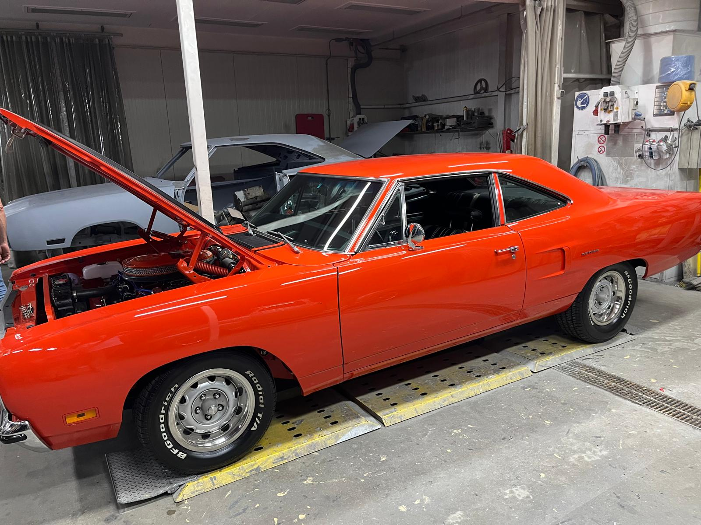
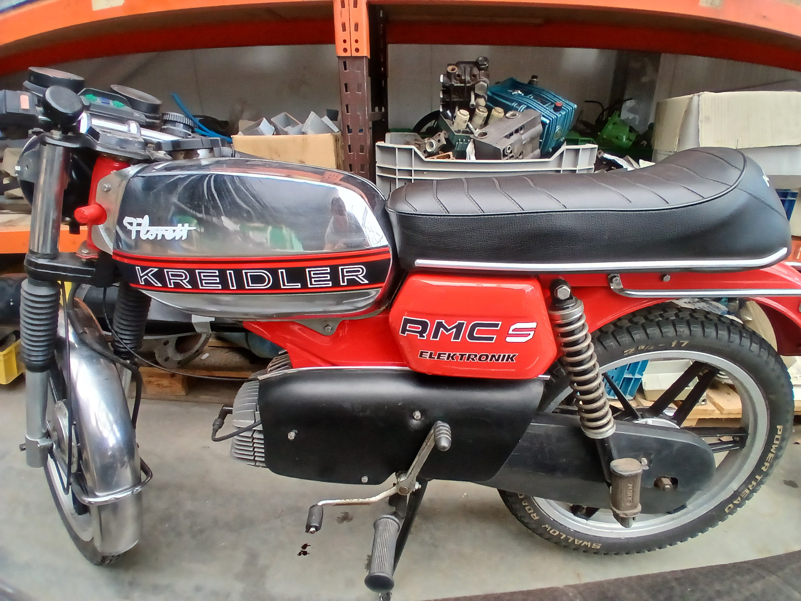

sleutelen
Ik sleutel in mijn vrije tijd ook graag aan brommers zoals deze op de foto die ik zelf helemaal heb opgeknapt. Het sleutelen zit wel een beetje in de familie, mijn vader, mijn oom en ook mijn broer sleutelen allemaal aan brommers. In de achtergrond kun je ook mijn werkplaats zien met mijn volgende project.

Auto's
Laatste tijd begin ik auto's ook steeds leuker te vinden. Ik heb spellen waar je auto's racet, ik kijk ook formule 1. En mijn vader heeft deze auto het is een plymouth roadrunner uit 1970 en ik vind het heel leuk om er in mee te rijden.

Mijn Kreidler
Dit is mijn eigen Kreidler, het is een redelijk snelle brommer die mijn vader voor mij had gebouwd, met veel originele onderdelen want Kreidler is nu failliet